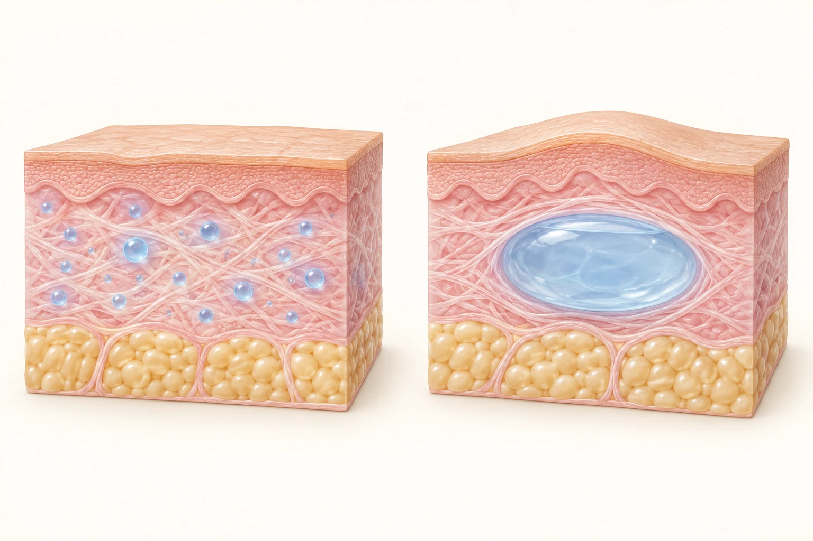

Hyaluronbehandlungen können unterschiedliche Ziele verfolgen: ausgewählte Merkmale der Hautqualität verbessern, geeignete Falten ausgleichen oder Lippenkontur und Volumen verändern. Wir wählen das Verfahren anhand Ihres Befunds und Ihrer Wünsche.
Hyaluronsäure bindet Wasser und kommt natürlicherweise im Körper vor. Für Injektionen werden speziell hergestellte Gele verwendet. Ihre Eigenschaften unterscheiden sich unter anderem in Vernetzung, Festigkeit und Verteilung im Gewebe. „Körpereigen“ bedeutet deshalb nicht, dass ein injiziertes Präparat risikofrei ist.
Meist weichere Gele werden in kleinen Mengen in der Haut verteilt. Je nach Produkt sollen Feuchtigkeit, Glätte oder Elastizität verbessert werden. Ein ausgeprägter Volumenaufbau ist nicht das Hauptziel.
Ein für die Region geeignetes Gel wird gezielt zum Ausgleich ausgewählter Falten oder zur Form- und Volumenveränderung eingesetzt. Konsistenz und Behandlungsziel müssen zusammenpassen.
Skinbooster ist kein einheitlicher Produktstandard. Nicht jedes dünnflüssige Hyaluron ist für jede Hautschicht oder Gesichtsregion vorgesehen. Manche Produkte sind stabilisiert beziehungsweise vernetzt, andere anders aufgebaut. Behandlungszyklus und erwartbare Haltbarkeit hängen vom gewählten Produkt ab.

Bild vergrößern ↗Links – Skinbooster: Kleine, verteilte Gelmengen stehen schematisch für die Behandlung der Hautqualität. Rechts – Kontur und Volumen: Ein gezielter Volumenausgleich unterstützt die gewünschte Form.
Die blaue Darstellung symbolisiert Hyaluron; sie zeigt keine feste Injektionstiefe oder Dosierung. Produkt, Gewebeschicht und Verteilung werden für Region und Behandlungsziel individuell gewählt.
KI-generierte Schemazeichnung, keine Patientenaufnahme. Nicht maßstabsgetreu. Keine Vorher-Nachher-Darstellung und kein versprochenes Behandlungsergebnis.
Wir beurteilen Haut, Gewebestütze, vorhandene Asymmetrien und frühere Behandlungen. Danach legen wir Region, Produkt, Menge und ein realistisches Ziel fest. Ein stufenweises Vorgehen kann sinnvoll sein. Mehr Filler ist nicht automatisch besser.
Diese Linien verlaufen seitlich der Nase in Richtung Mundwinkel. Ihre Ausprägung hängt nicht nur von der Falte selbst ab, sondern auch von Haut, Gewebestütze und Gesichtsanatomie. Wir prüfen, ob ein gezielter Ausgleich sinnvoll ist und welche Veränderung natürlich zum Gesicht passt.
Vollständiges „Wegfüllen“ ist weder immer erreichbar noch sinnvoll. Die Gefäßverläufe in dieser Region erfordern besondere Aufmerksamkeit. Eine Kanüle beseitigt das Gefäßrisiko nicht.
Die Linien ziehen von den Mundwinkeln in Richtung Kinn. Hyaluron kann in geeigneten Fällen einen Konturausgleich unterstützen. Bei stärkerem Gewebeabsinken oder Hautüberschuss bleiben Grenzen; andere Verfahren können passender sein.
Je nach Wunsch können Kontur, Proportionen oder Volumen verändert werden. Vorhandene Asymmetrien werden mitbesprochen. Die Lippen sollen in ihrer Funktion berücksichtigt werden; ein bestimmtes Foto oder eine exakt gleiche Form lässt sich nicht versprechen.
Nach der Behandlung können die Lippen vorübergehend deutlich geschwollen und empfindlich sein. Das unmittelbare Aussehen ist deshalb kein verlässlicher Endbefund. Bei Herpesneigung besprechen wir gegebenenfalls eine vorbeugende Behandlung.
Hier steht die Hautqualität im Vordergrund. Kleine Injektionen können vorübergehend sichtbare Erhebungen oder Blutergüsse verursachen. Je nach Produkt ist eine Behandlungsserie mit anschließender Beurteilung vorgesehen; ein einheitlicher Sitzungsplan gilt nicht für alle Präparate.
Hautpflege und UV-Schutz sind unabhängig von einer Injektion sinnvoll. Je nach Anliegen kommen auch hauterneuernde Verfahren, bei mimischen Falten eine gesondert geplante Botulinumtoxin-Behandlung oder operative Möglichkeiten infrage. Nutzen, Aufwand und Risiken unterscheiden sich. Nicht jede Falte muss behandelt werden.
Nach Untersuchung und Einwilligung wird die Haut gereinigt und desinfiziert. Ein geeignetes Gel wird mit Nadel oder Kanüle in die geplante Region injiziert. Wir beurteilen Form und Gewebe während der Behandlung. Weder Nadel noch Kanüle schließen Gefäßkomplikationen aus.
Manche Produkte enthalten ein Lokalanästhetikum. Zusätzlich können Betäubungscreme oder eine örtliche Betäubung, besonders an den Lippen, sinnvoll sein. Druck, Brennen oder Schmerz sind trotzdem möglich. Sedierung oder Vollnarkose sind normalerweise nicht erforderlich. Betäubungsmittel haben eigene Risiken wie Allergie oder vorübergehende Taubheit.
Hyaluronidase kann in geeigneten Situationen den Abbau unterstützen; der Einsatz kann Off-Label-Use sein. Allergien und andere unerwünschte Wirkungen sind möglich. Es gibt keine Garantie auf vollständige Auflösung, Wiederherstellung des Ausgangszustands oder Verhinderung bleibender Schäden.
Das frühe Aussehen wird durch Schwellung beeinflusst. Nach deren Abklingen, häufig nach etwa zwei Wochen, wird das Ergebnis beurteilt. Bei Skinboostern kann die Beurteilung erst nach dem vereinbarten Zyklus sinnvoll sein.
Wie lange eine Veränderung sichtbar bleibt, hängt von Produkt, Region, Stoffwechsel und Behandlung ab. Eine Wirkung über mehrere Monate ist möglich; ein einheitliches Haltbarkeitsversprechen ist nicht seriös. Gel kann länger im Gewebe verbleiben als die sichtbare Wirkung. Nachbehandlungen werden individuell entschieden.
Am Behandlungstag intensiven Sport, starke Wärme und Alkohol vermeiden. Nicht selbst massieren oder starken Druck ausüben. Solange Rötung oder Schwellung bestehen, starke Wärme und intensive Sonne weiter meiden. Make-up erst nach Verschluss der Einstichstellen entsprechend unserer Anweisung verwenden.
Nach Lippenbetäubung erst wieder essen und heiße Getränke trinken, wenn das normale Gefühl zurückgekehrt ist. Bei Bedarf vorsichtig mit Pausen kühlen, ohne starken Druck. Schmerzmittel oder eine Herpesprophylaxe nur nach persönlicher Empfehlung anwenden. Geplante Zahn- und Hautbehandlungen vorab abstimmen.
Durchblutungsstörung erkennen: Ungewöhnlich starke oder zunehmende Schmerzen, weiße, grau-bläuliche, netzartig verfärbte oder kalte Haut: sofort anrufen und untersuchen lassen. Nicht bis zum nächsten Tag warten.
Praxis 06151 786540. Nach der Behandlung außerhalb der Praxissprechzeiten: +49 151 10437450. Falls nicht erreichbar: zahnärztlicher Notdienst 01805 60 70 11.
Bei Sehverschlechterung, Doppelbildern, Augenschmerzen oder Schlaganfallzeichen wie Lähmung oder Sprachstörung sofort 112. Nicht selbst fahren und nicht erst auf einen Rückruf warten.
Bei lebensbedrohlicher Notlage, Atemnot, starker Schluckbehinderung oder rascher Schwellung von Mundboden, Hals oder Zunge: 112.
Die Kosten werden individuell als Eigenleistung vereinbart. Grundlage sind Region, Produkt, Menge, Behandlungszyklus und Nachkontrolle. Eventuelle weitere Sitzungen oder Korrekturen werden vorab besprochen. Eine Erstattung durch die Krankenkasse wird nicht zugesagt.
Behandlungsziel und Produktklasse verstanden? Vorfiller, Medikamente und Herpesneigung angegeben? Gefäßrisiken und Warnzeichen besprochen? Persönliche Nachsorge, Kontrolltermin und Kosten geklärt?
FDA: Dermal fillers, risks and patient information; Herstellerinformation Skinbooster. Abruf 13.09.2026. Die konkrete Anwendung richtet sich nach Ihrem Befund und den Angaben zum ausgewählten Präparat.